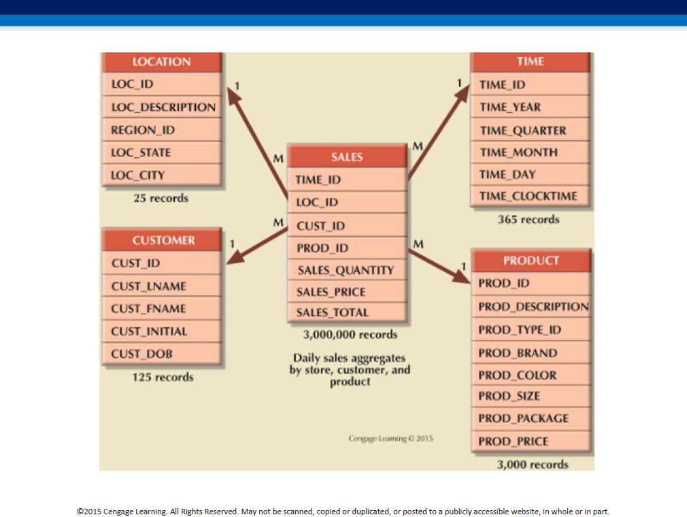

Trees (transactional) vs forests ('analytical')
Transactional, operational data: individual units.
'Analytical', decision-support data: aggregated.

Business Intelligence("BI") |
Transactional, operational data: individual units.
'Analytical', decision-support data: aggregated.
ETL is a classic "schema on write" process, where we define a schema (table structure) first, THEN load the data into that structure.
An ETL-related job ad:
You can learn much more about ETL, here.

We have the fact table (of transactions) at the center, and denormalized (all-in-one) dimension tables all around.
Here is another representation.
Note: "dimensions are qualifying characteristics that provide additional perspectives to a given fact; dimensions provide descriptive characteristics about the facts through their attributes."
Each fact (transaction) can now pictured to be located in a multi-dimensional cube where the axes are dimensions. Eg. a 3D representation of our data for the above schema would look like this:
Slicing and dicing the cube provides specific insights..
Dimensional tables can be normalized so that they have their own dimensional tables - this is done to simplify the design, but requiring navigation across the normalized chains.
Purpose - an attribute hierarchy would provide drill-down/roll-up capability as well, eg.
Here is another representation.
There are four different ways in which we can organize (structure) a data warehouse:
To denormalize a fact table (#3 above), we simply add extra 'dimension' columns to it, and fill them with redundant data - this permits fast queries (no joins needed) at the expense of disk space (and cleanliness of design).
Instead of having a fact table pointing to denormalized star dimensions (#1), or a fact table with lowest attrs pointing to a chain of rolled-up attrs, ie. snowflake schema (#2), or creating a denormalized fact table (#3), we can create multiple fact tables, one for each level in an attr hierarchy (#4) - it is a different form of denormalization, where the redundant data is stored in physically separate tables.
Fact tables that we see in the middle of star/snowflake schema, are ALWAYS denormalized, with multiple repeating values in the columns that link to dimensions - eg. multiple date values, product values, location values, POS terminal # values etc (because each row in a fact table contains those columns as raw 'facts').
Dimension tables, in a star schema are ALSO denormalized - eg. location dimension, with city,state,region columns, will have repeating values for states (because many cities are in each state), and repeating region values (because many states are in each region).
Dimension tables in a snowflake schema are normalized, because we create a chain (hierarchy) of them using the star's dimension columns.
The fact table ALWAYS stays denormalized. Such a fact table is said to employ star schema, if we use star-like denormalized columns for BI - eg. to find out how much of a product we sold in a city, we'd query the fact rows for city name, and if we need it, can also do state-level analyses (because states are listed in the location dimension table).
Using a snowflake schema, doing location analysis for a product at a city level is similar to the above paragraph - we simply look for the city name, and if necessary, get extra info about the city (eg tax rate) by looking at the dimension table. BUT to do state level analysis, we need to follow the city-state link, and use the state-level dimension table ie traverse a branch of the snowflake.
To avoid traversing those branches in a snowflake, we trade off ('waste') space by creating extra 'copies' of the fact table, where a column such as city (lowest value in the hierarchy of 'location') is REPLACED instead with 'state' values, and in another copy, with 'region' values. This lets us do star-like analyses again, because a fact row directly points the state table, and in another copy, directly points to the region table - no traversing the chain necessary (at the expense of extra storage).
Which schema (star or snowflake) is used to model the warehouse, determines whether we maintain denormalized (or normalized) dimension tables [fact tables always stay denormalized]. 'For BI purposes, the idea is to take the 'single unified view' of data which is in the fact table (which contains numerous columns (think of a single Amazon purchase order item) - they can be categorized into dimensions, and in each dimension, even be hierarchically grouped - an example would be 'location'), and DERIVE additional tables, with data pre-aggregated along those (hierarchies of) dimensions. This lets us slice-and-dice (along dimensions), and zoom in/out (along just one dimension), all without expensive querying at runtime (on billions of rows), because the 'group by' calculations have been done already (that resulted in those aggregated data tables).'
"True fact" - this was the start of DM [Data Mining]!
Relational OLAP ('ROLAP'):
Multidimensional OLAP ('MOLAP'):
ROLLUP and CUBE are GROUP BY modifiers - they help generate subtotals for a list of specified columns (see examples that follow). Depending on granularity of the columns (eg. US_REGION vs STORE_NUMBER), these subtotals help provide a rolled-up (aggregated) or drilled-down (detailed) analysis of data.
"Subtotal for each vendor - all products; sum of (the only set of) subtotals".
"Subtotal for each month - all products; subtotal for each product - all months; sum of (either set of) subtotals".
A 'traditional' data warehouse is an ETL-based, historical record of transactions - very RDB-like (schema-on-write).
A 'modern' alternative is a 'data lake', which offers a more continuous form of analytics, driven by the rise of unstructured (semi-structured, really) data, streaming, cloud storage, etc.
In a data lake, data is NOT ETLd, rather, it is stored in its 'raw' ("natural") form [even incomplete, untransformed...]; we create a schema AFTER storing (raw) data in such a DB - this is called ELT, or 'reverse ETL', or 'schema on read'.
In a data lake we can do scheme-on-read, ie ELT, to create a warehouse - a 'lakehouse'. Here is a good 'lakehouse' book (read p.19-p.39 in particular). Here is a good set of 12 short clips, that are about 'Data Lake vs. Lakehouse'.
VantageCloud is a cloud-based data lake product.
There is also, the data mesh; here is a comparison...
Here is OpenHouse :)
This is DataBricks' architecture, for all-in-one lakehouse+{ML,BI...}.
{kind=link}
{kind=link}
{kind=link}